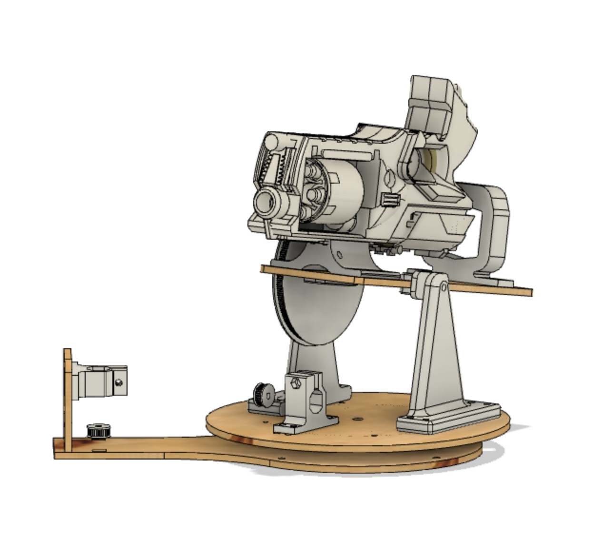

hover for info
Automatic Nerf Blaster
Cal Poly San Luis Obispo Mechatronics Term Project
This 6 week long 3 person group project involved designing a 2 axis device using rapid prototyping tools that housed a Nerf blaster, electronic wiring to connect motors, motor driver, servo, and thermal sensor, and software utilizing a finite state machine framework that communicated to the sensor using I2C and drove the motors using a PI controller. I was specifically responsible for the entire 3D CAD design, set up and ran the 3D printing and laser cutting, and supported in software and firmware development. Belt sprocket shown in images was designed in multiple iterations to get 3D prints to mesh correctly with timing belt. Video of device in action and of it competing in a class tournament below.
